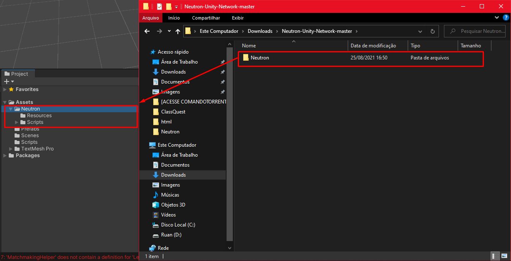

Começando¶
Instalação
Faça o download do Neutron no repositório: https://github.com/RuanCardoso/Neutron-Unity-Network
Extraia o .zip, entre na pasta e renomeie a sub-pasta para “Neutron”
Verifique se seu projeto possui o “Newtonsoft Json”, caso tenha-o instalado, pule este passo, caso não tenha o “Newtonsoft Json” instale o .unitypackage “JsonAutoInstaller” que se encontra dentro da pasta “Neutron”, este fará a instalação automática do “Newtonsoft Json” em seu projeto.
Warning
Antes de instalar o Neutron é extremamente necessário instalar o “Newtonsoft Json” antes, caso contrário, você obterá erros de compilação. Observe que após a instalação do “Newtonsoft Json” o mesmo se encontrará na pasta “Packages” em vez de “Assets”
Tip
As versões mais recentes da Unity, 2020 em diante, já possui o “Newtonsoft Json” instalado por padrão na pasta “Packages”, o mesmo se encontra na pasta “Packages” logo abaixo de “Assets”.
Agora que você já tem o pacote “Newtonsoft Json”, basta arrastar a pasta “Neutron” para a pasta “Assets” da Unity.
Instalação concluída (:
Configurando o Neutron¶
Pressione “Alt+F11” para abrir as configurações do Neutron ou abra-o pelo menu “Neutron->Settings->File->Neutron”.
- Addresses
A lista de endereços ip de servidores, o index 0 é usado por padrão.
- Port
A porta Tcp que será utilizado para estabelecer a conexão com os servidores.
Warning
Não se esqueça de liberar a porta Tcp no Firewall e no Gerenciamento de Portas do seu Cloud(Google, Amazon, Azure…etc), no caso do Udp, você deve liberar todas as portas Udp, exceto as portas exclusivas para outras aplicações, a fim de evitar vulnerabilidades.
- AppId
Usado para identificar a versão do seu Jogo.
Warning
Se o AppId do cliente é diferente do AppId do servidor a conexão será rejeitada, útil para impedir que versões antigas se conectem ao servidor. Antes de compilar as duas versões(Client e Servidor) é recomendado que gere um novo AppId.
- Fps
Limita o Fps da compilação atual.
Warning
O SendRate(Taxa de Envio) é limitado ao fps do jogo, ex: se o fps atual é 30, e o SendRate está definido em 128 vezes por segundo, o SendRate será limitado a 30 vezes por segundo, resumindo, o SendRate não pode ser maior que a taxa de fps, é limitado automaticamente.
- Pool Capacity
Stream and Packet Pool Capacity, isto é, a quantidade de objetos pré-inicializados para uso e a quantidade máxima de objetos no pool.
Note
“Stream pool”, reutilizará “streams” para escrever novamente na rede, o mesmo para “Packet Pool” que reutilizará pacotes. Quanto maior o SendRate mais objetos serão retirados do pool. ex: uma Taxa de 64 vezes por segundo vai precisar de uma capacidade maior no pool, caso contrário, haverá estouros, em caso de estouros, um novo objeto será criado para evitar que seu servidor pare de funcionar, a criação de novos objetos gera alocações no GC.
- Serialization
O tipo de serialização que será usado para transformar um objeto em um fluxo de dados para ser enviado via rede.
- Compression
O tipo de compressão de dados que será usado para compactar os dados enviados via rede
Warning
Observe que compressão de dados aumenta o uso de Cpu, pois os mesmos devem ser compactado antes de enviar e descompactado após chegar ao destino.
- NoDelay
Obtém ou define um valor que desabilita um atraso ao enviar ou receber buffers que não estão cheios.
Note
Quando NoDelay é false, a rede não envia um pacote até que ele tenha coletado uma quantidade significativa de dados de saída. Devido à quantidade de sobrecarga em um segmento TCP, o envio de pequenas quantidades de dados é ineficiente. No entanto, existem situações em que você precisa enviar quantidades muito pequenas de dados ou esperar respostas imediatas de cada pacote enviado. Sua decisão deve avaliar a importância relativa da eficiência da rede em relação aos requisitos do aplicativo.
- PingRate
Medido em segundos, é enviado em X segundos um pacote de manuntenção Udp pro servidor.
- TcpKeepAlive
Medido em segundos, é enviado em X segundos um pacote de manuntenção Tcp pro servidor.
Note
Os pacotes de manuntenção são enviados com a única finalidade de manter a conexão ativa.
- Backlog
A quantidade máxima de conexões em espera na fila.
- Container Name
O nome da cena(scene) do cliente.
- Max Udp Packet Size
O tamanho máximo do pacote Udp que pode ser enviado ou recebido.
Note
Max Udp Packet Size, recomendo o valor de 512 bytes, este valor não excede o valor MTU mínimo, logo as chances do pacote ser fragmentado é zero. Quanto maior o tamanho do pacote Udp, maior são as chances do pacote ser fragmentado ao longo do caminho, isto porque, corre o risco de ao longo do caminho o tamanho exceder o MTU de algum router. Neutron não suporta a fragmentação de pacotes Udp.
- Max Tcp Packet Size
O tamanho máximo do pacote Tcp que pode ser enviado ou recebido.
- Receive Buffer Size
Define o número de bytes que você espera armazenar no buffer de recebimento para cada operação de leitura.
- Send Buffer Size
Define o número de bytes que você espera enviar em cada chamada para a rede.
- Max Connections Per Ip
Define a quantidade máxima que o mesmo Ip pode se conectar ao servidor.
Tip
Max Connections Per Ip, pode ser usado para limitar quantos jogos podem ser aberto na mesma rede. Ex: se o valor ser 1, somente um jogo pode ser aberto na mesma rede, outra instância do jogo será desconectada.
- Max Latency
A latência máxima tolerada pelo servidor.
Warning
Qualquer valor que excede Max Latency, o servidor irá acionar o evento “OnMaxLatencyReached”. Ex: dentro do evento você pode enviar a ação de desconectar, expulsar ou qualquer outra ação.
- Time Desync Tolerance
O tempo máximo em segundos que o servidor tolera de dessincronização do cliente.
Note
Ex: Time Desync Tolerance é 1, isto é, o servidor tolera que o cliente esteja 1 segundo atrasado, se exceder, o evento “OnDesyncToleranceReached” será acionado.
- Time Resync Tolerance
Medido em segundos, define a tolerância de ressincronização.
Note
Ex: Time Resync Tolerance: é 0.001, isto é, se a diferença do tempo do servidor e do cliente é maior que o valor definido, o tempo será ressincronizado.
- Receive Model
Define se o modo de recebimento dos dados é sincrono ou assíncrono.
- Send Model
Define se o modo de enviar os dados é sincrono ou assíncrono.
- Async Pattern
Define os padrões para a execução de operações assíncronas.
Tip
O modelo de envio Async e o padrão Tap, é recomendado o uso em caso de baixa frêquencia de envio e recebimento de dados, estes, geram muita alocaçãos no GC e alto uso de CPU. A configuração padrão é ideal para todos os casos de uso.
Modelo Tap:
1 2 3 | Task Test() {
return new Task();
}
|
Modelo Apm:
1 2 3 4 5 6 7 | void BeginTest() {
}
void EndTest() {
}
|
- Encoding
Define o tipo de codificação para o processo de transformar um conjunto de caracteres em uma sequência de bytes.
Warning
Esta propriedade pode causar o aumento exponencial do uso de largura de banda.
- Header Size
Define o tipo de primitivo que será usado para armazenar o tamanho da mensagem no cabeçalho do pacote.
Warning
Esta propriedade pode causar o aumento exponencial do uso de largura de banda.
- Buffered Stream
Adiciona uma camada de armazenamento em buffer para ler e gravar operações em outro fluxo.
Tip
O uso de BufferedStream aumenta em até dez vezes o desempenho sobre operações E/S no socket Tcp.
Synchronization
Pressione “Alt+F10” para abrir as configurações de Sincronização ou abra-o pelo menu “Neutron->Settings->File->Synchronization”.
Aqui você pode personalizar o alvo de alguns pacotes internos do Neutron.
- TargetTo
Define os alvos de recepção do pacote.
- Tunneling To
Define o túnel onde os dados devem ser tunelados.
- Protocol
O protocolo que será usado para transmitir o pacote via rede.
Conexão e Eventos¶
Tip
Muitos metódos e eventos possui o último parâmetro do tipo “Neutron”, este parâmetro é a instância que chamou o metódo ou evento.
Tip
Muitos metódos e eventos possui o parâmetro do tipo “bool” chamado de “isMine”, este parâmetro retorna se o “Player” passado como parâmetro é seu.
Para começamos com Neutron é muito simples:
Primeiro iremos criar uma instância de Neutron.
1 | Neutron neutron = Neutron.Create(ClientMode.Player);
|
Observe que o metódo Neutron.Create() leva 1 argumento opcional:
- ClientMode.Player
Define que está instância será a instância principal.
- ClientMode.Virtual
Cria uma instância que não é a instância principal.
Tip
A instância principal é acessível através da propriedade estática “Neutron.Client”.
Tip
A instância virtual pode ser usada para simular jogadores e outras ações.
Agora vamos registrar os eventos da instância.
Neutron tem alguns eventos ao lado do cliente, sendo eles.
1 2 3 4 5 6 7 8 9 10 11 12 13 14 15 | neutron.OnNeutronConnected += OnNeutronConnected;
neutron.OnPlayerConnected += OnPlayerConnected;
//Este evento é acionado quando uma tentativa de conexão retorna seu estado.
//isSuccess: Retorna se a tentativa de conexão foi bem sucedida.
private void OnNeutronConnected(bool isSuccess, Neutron neutron)
{
//* Faça algo.
}
private void OnPlayerConnected(NeutronPlayer player, bool isMine, Neutron neutron)
{
}
|